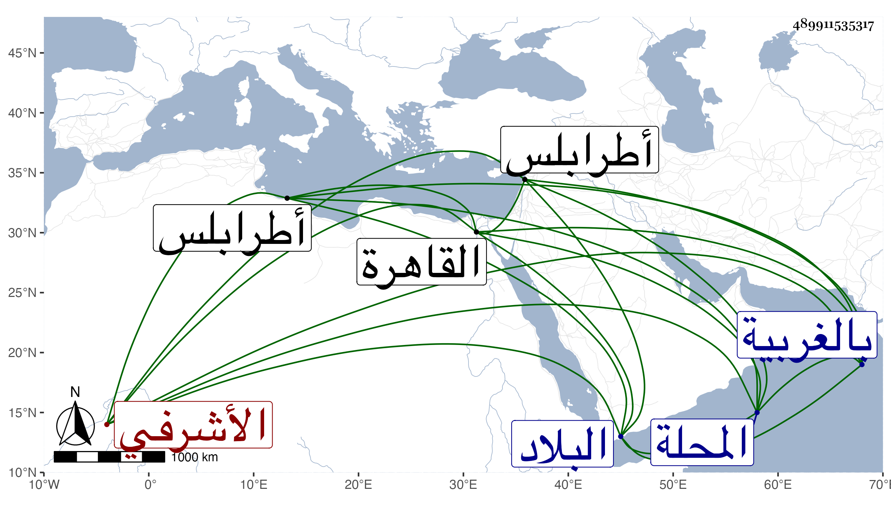

0902Sakhawi.DawLamic.ITO20230111-ara1.EIS1600.489911535317
Biography ID: 489911535317
714
قراجا الأشرفي برسباي . ملكه في أيام إمرته فلما تسلطن عمله خاصكيا وخازندارا ثم عمله عشرة وخلع عليه بالخازندارية الكبرى ثم نقله إلى شد الشربخاناة وأنعم عليه بإمرة طبلخاناة ، واستمر إلى أن قدمه في سنة ثمان وثلاثين تقريبا وتجرد صحبة الأمراء إلى البلاد الشامية ثم عاد معهم وقد تسلطن العزيز ثم كان ممن وافق قرقماس الشعباني في الركوب على الظاهر ثم فر عند المصاف ولحق بالظاهر فأقره على إمرته بعد القبض على قرقماس ثم خلع عليه بعمل الجسور بالغربية فتوجه إلى المحلة فأقام بها فلما تسحب العزيز أرسل بالقبض عليه وحبس مدة ثم أطلق وأقام بالقاهرة بطالا إلى أن أنعم عليه بإمرة هينة بطرابلس فتوجه إليها فأقام بها حتى مات بها في سنة تسع أو ثمان وأربعين وهو في أوائل الكهولة ، وكان روميا أسمر معتدل القد مليحا مستدير اللحية صغيرها مسرفا على نفسه .
